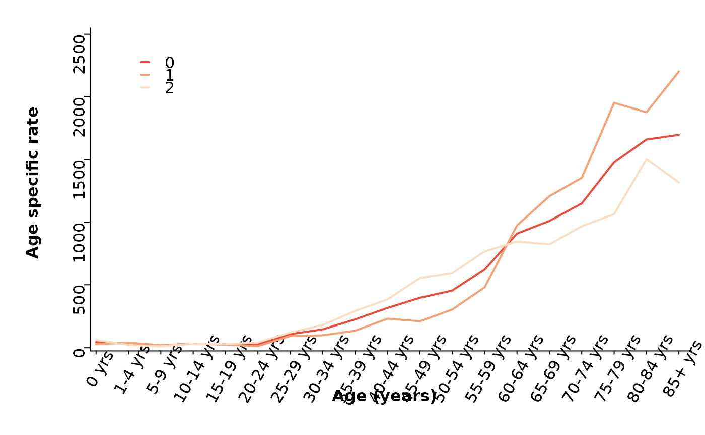
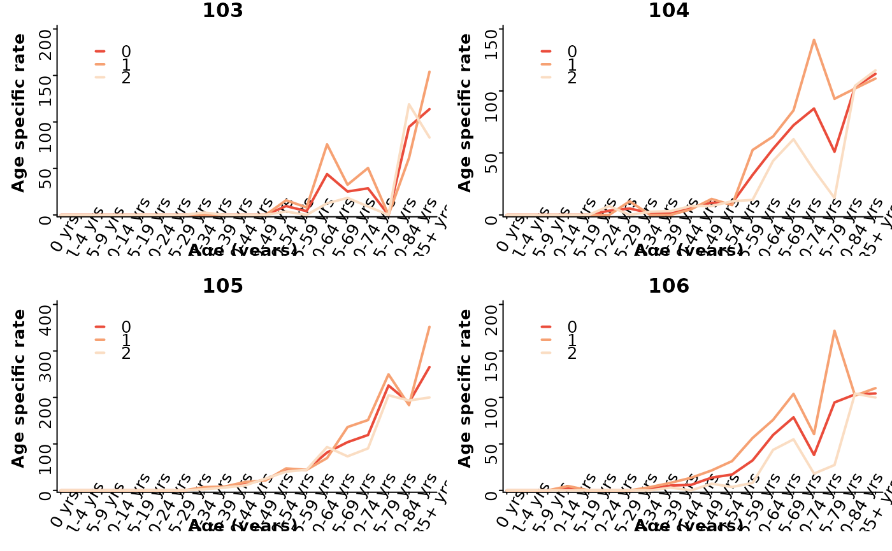

This function draws a line chart from a data frame, optionally grouped by a categorical variable. It uses base R graphics and supports custom axis ticks, labels, and styles.
Usage
draw_linechart(
data,
x,
y,
group = NULL,
facet = NULL,
grid = c(1, 1),
x_axis = NULL,
y_axis = NULL,
x_label = NULL,
y_label = NULL,
axis_title = c("Age (years)", "Age specific rate"),
cols = NULL,
palette = "Peach",
line_type = "l",
lwd = 2,
adj = 0.02,
srt = 60,
main = NULL,
sub = NULL,
legend_pos = c(0.05, 0.95),
mar = c(1, 0, 1, 0),
add = TRUE,
offset = 0.01,
...
)Arguments
- data
A data frame containing the variables to plot.
- x, y
Bare column names for the x and y axis variables.
- group
Optional bare column name used to group and color lines.
- facet
Optional bare column name used for faceting. If provided, the data will be split by this variable and plotted in a multi-panel layout.
- grid
A vector of length 2 specifying number of rows and columns for facets. Default is c(1, 1).
- x_axis
Optional numeric vector specifying x-axis tick locations.
- y_axis
Optional numeric vector specifying y-axis tick locations.
- x_label, y_label
Optional labels for x and y axis ticks. If
NULL, defaults are used.- axis_title
Character vector of length 2 giving the axis titles: c("x axis label", "y axis label").
- cols
Character vector of line colors. Defaults to c("darkgreen", "darkred", "gray").
- palette
Character, palette name indicate group of colors.
- line_type
1-character string giving the type of plot desired. The following values are possible, for details, see plot: "p" for points, "l" for lines, "b" for both points and lines, "c" for empty points joined by lines, "o" for overplotted points and lines, "s" and "S" for stair steps and "h" for histogram-like vertical lines. Finally, "n" does not produce any points or lines.
- lwd
Line width. Default is 2.
- adj
Adjustment for axis text placement. Default is 0.02.
- srt
String rotation angle for x-axis labels. Default is 90 degrees.
- main, sub
Main title and subtitle of the plot.
- legend_pos
Position of the legend.
- mar
Margin of the sub plot.
- add
Logical. If
TRUE, restores original graphics parameters after plotting.- offset
Axis offset used for spacing ticks. Default is 0.01.
- ...
Additional arguments (currently unused).
Examples
data("canregs")
fbsw <- count_canreg(canregs[[1]], label_tail="yrs")
agerate <- create_age_rate(fbsw, year, sex)
agerate <- add_labels(agerate, lang = "en")
draw_linechart(agerate, agegrp, rate, sex)

agerate <- create_age_rate(fbsw, year, sex, cancer)
agerate <- add_labels(agerate, lang = "en")
agerate <- dplyr::filter(agerate, cancer %in% as.character(c(103:106)))
draw_linechart(agerate, agegrp, rate, sex, cancer, grid = c(2, 2))
